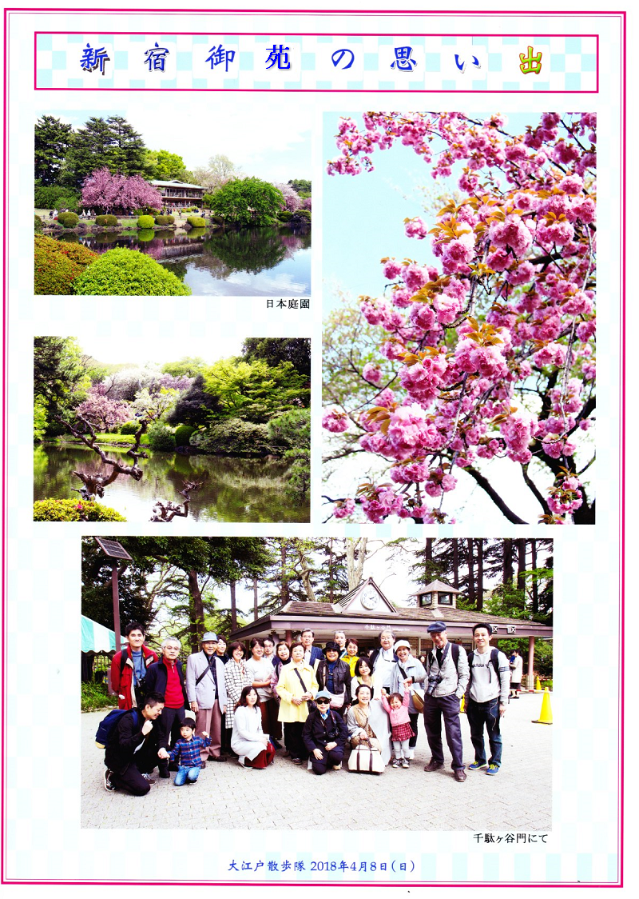
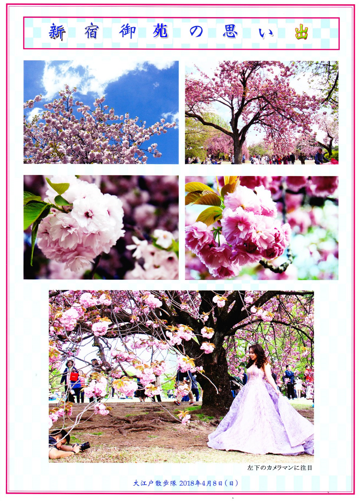
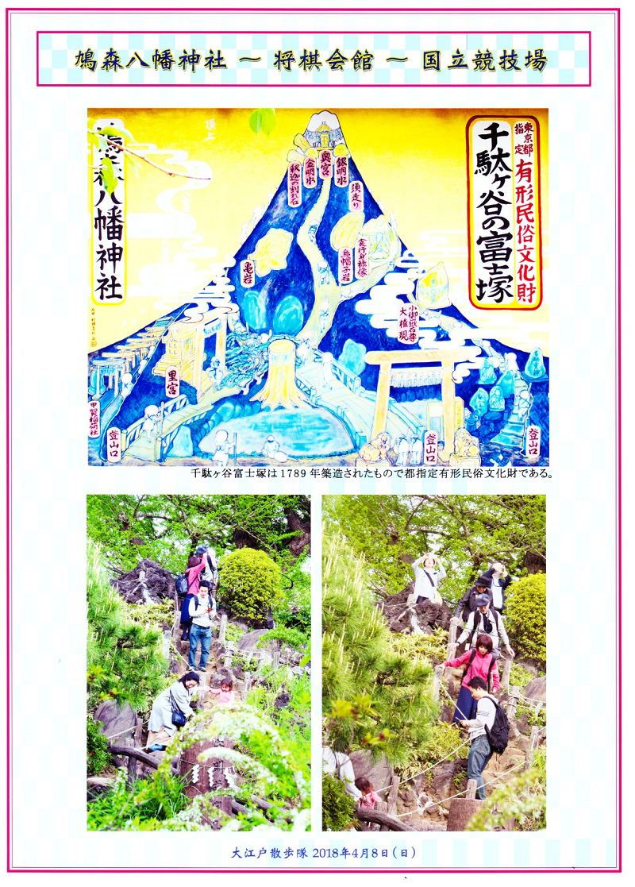
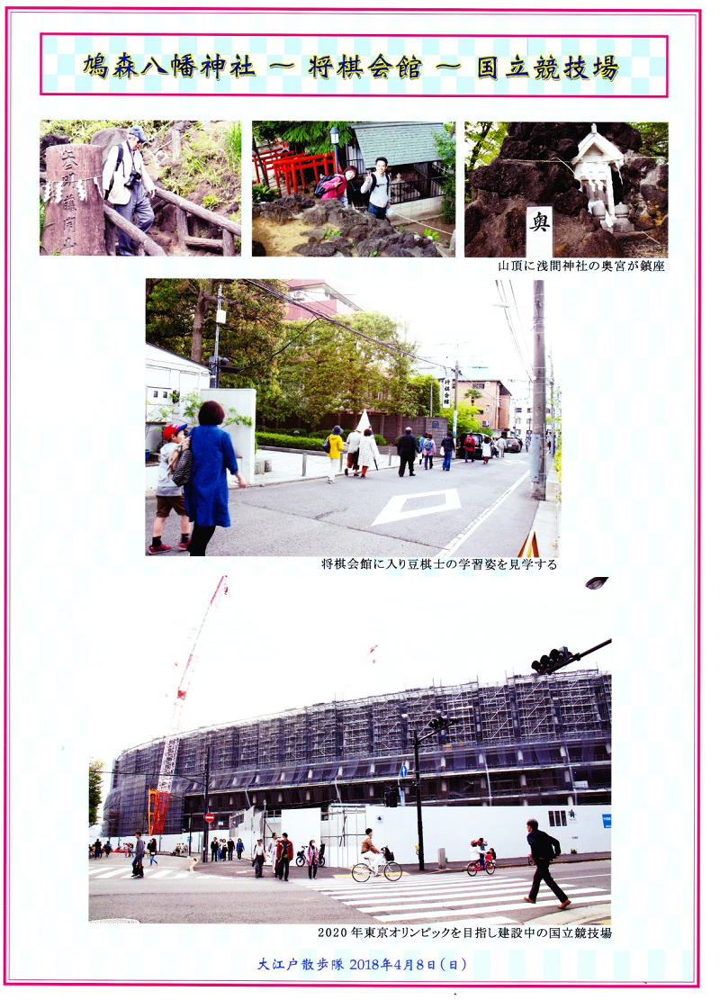
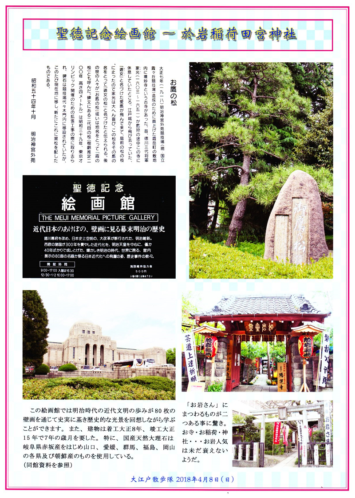
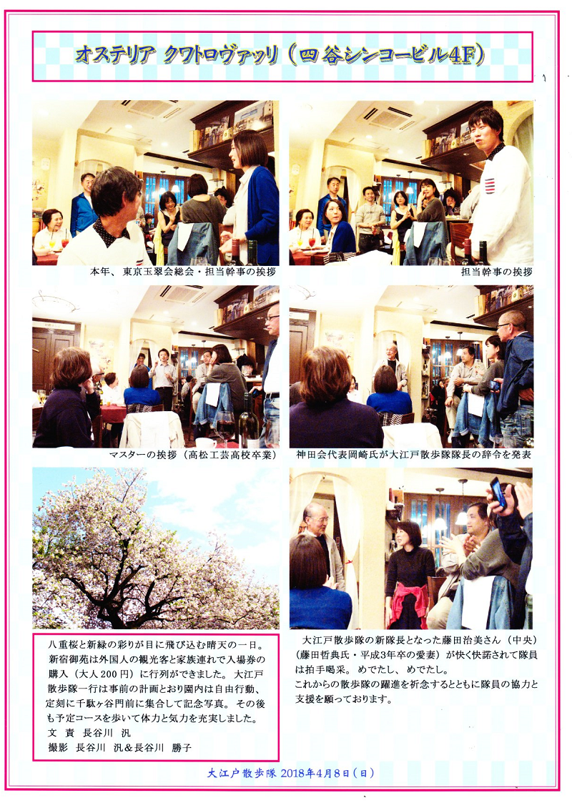

大江戸散歩隊では、2018年(H30)4月8日、新宿御苑、鳩森八幡神社、将棋会館、建設中の国立競技場、聖徳記念絵画館、於岩稲荷田宮神社を散歩してきました。
今年は桜の満開が早かっため、すでに葉桜かなと思われましたが、新宿御苑には吉野桜だけでなく65種の桜があり、十分桜の花を楽しむことができました。
打ち上げは、香川県出身のシェフが腕を振るう四谷三丁目「オステリア クワトロヴァッリ」で、香川県の素材をふんだんに使ったイタリアンを楽しみました。





